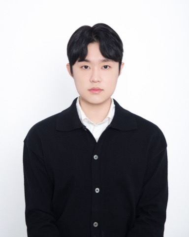

About

I'm Gihyun Bae (배기현), a third-year undergraduate in the Department of Art and Technology at Chung-Ang University, with an interdisciplinary major in Cybersecurity. Since March 2026 I have been an undergraduate researcher at INC LAB (advisor: Prof. Sangsoon Lim) and a member of the Advanced Track at CUAI, the university's AI society.
I study how interactive systems respond when what a person gives them changes — and how people can notice and correct those systems when they go wrong. My current interests are:
- Sensing human movement as input for XR interaction
- Evaluating how vision-language and language models respond to changes in the query, the interface, or user feedback
- Human-AI interaction that helps people catch a model's errors and give effective feedback
I am looking for research internship and graduate positions in HCI and human-AI interaction.
News
- Nov 2026📝 Submitted a first-author paper on how anti-sycophancy instructions affect valid answer correction in language models to DigiCon-26.
- Nov 2026🧪 Running follow-up experiments on query–interface language mismatch across seven VLMs. More →
- Sep 2026🏆 Our multilingual GUI reasoning study won the Grand Prize at the CUAI Summer Conference.
- Sep 2026🎓 Selected as a Seongnam City Scholarship recipient.
- Aug 2026🥈 G-NOISE, an XR simulation of urban-noise response, received the Excellence Award at the Gyeonggi Virtual Convergence Content Challenge.
- Aug 2026🪧 Presented a poster on HMD-based head-gesture recognition for hands-free XR interaction at IWCS 2026.
- Jul 2026🥇 Our HMD head-gesture recognition paper won the Gold Prize at the Korea Digital Contents Society Summer Conference.
- Mar 2026🔬 Joined INC LAB as an undergraduate researcher and the CUAI Advanced Track.